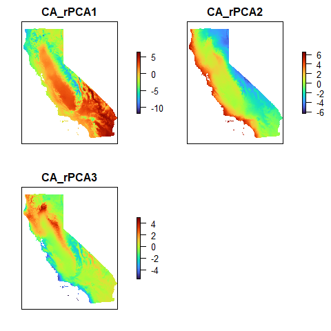
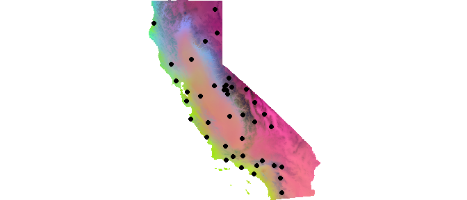

A Landscape Genomic Analysis Toolkit in R (algatr) was built to provide researchers with a step-by-step, start-to-finish pipeline to perform core landscape genomic analysis methods with their data.
Citation
Please cite our paper if you use this package:
Chambers, E.A., Bishop, A.P., & Wang, I.J. (2023). Individual-based landscape genomics for conservation: An analysis pipeline. Molecular Ecology Resources.https://doi.org/10.1111/1755-0998.13884.
Because algatr makes use of existing software, please also be sure to cite the papers for the relevant corresponding method:
wingen |
Bishop et al. (2023) | DOI: 10.1111/2041-210X.14090 |
TESS |
Caye et al. (2016) | DOI: 10.1111/1755-0998.12471 |
MMRR |
Wang (2013) | DOI: 10.1111/evo.12134 |
GDM |
Ferrier et al. (2007) | DOI: 10.1111/j.1472-4642.2007.00341.x |
| Fitzpatrick et al. (2022) | gdm: Generalized Dissimilarity Modeling. R package version 1.5.0-9.1. | |
RDA |
Capblancq & Forester (2021) | DOI: 10.1111/2041-210X.13722 |
LFMM |
Caye et al. (2019) | DOI: 10.1093/molbev/msz008 |
| Jumentier (2021) | lfmm: Latent Factor Mixed Models. R package version 1.1. |
Installation
algatr can be installed with the following code:
devtools::install_github("TheWangLab/algatr")The algatr package depends on many packages for all of the different methods implemented. To ensure that algatr can still be installed even if one of the many dependencies breaks, the packages required for each method are suggested rather than imported. To install all of the suggested packages set dependencies = TRUE when running install_github(). To install just the packages required for each method, use the *_packages() functions below. This is helpful if you’re only interested in using a subset of the methods provided and don’t want to install unnecessary packages.
# Install algatr
devtools::install_github("TheWangLab/algatr")
library(algatr)
# Option 1: Install all of the packages for algatr
alazygatr_packages()
# Option 2: Install subsets of packages based on what methods you want to use:
## Genetic distance processing:
gen_dist_packages()
## Genetic data processing:
data_processing_packages()
## Environmental and geographic data processing:
envirodata_packages()
## LFMM:
lfmm_packages()
## RDA:
rda_packages()
## MMRR:
mmrr_packages()
## GDM:
gdm_packages()
## TESS:
tess_packages()
## wingen:
wingen_packages()If you’re installing on Ubuntu, you may run into issues installing the rmapshaper package; scroll to the bottom of the README for more information.
Docker
algatr can be run using Docker, in which case prior installation of package dependencies is not required. First, install Docker, and then start algatr within a Docker container:
You can also run the container in an RStudio instance:
Open localhost:8787 in your browser and log in with username:rstudio and password:yourpassword (substitute yourpassword for whatever password you would like)
Codespaces
You can also try out algatr using GitHub codespaces — a cloud-based development environment with everything you need installed and ready to go. To start a codespace, click the green “Code” button at the top of the repository and select “Open with Codespaces”. This will open a new codespace with the algatr repository loaded. If you want to make changes to any of the files, you will need to fork the repository to save them. GitHub Free personal accounts automatically come with 120 codespace core hours per month free. For more information about codespaces see here.
Introduction
Landscape genetics (or genomics) combines the fields of landscape ecology and population genetics to understand how environmental variation affects spatial genetic variation. Thus, at its most basic, any landscape genetics method requires genetic and environmental data as input.
The methods contained within algatr will perform analyses on:
Genomic-scale datasets (i.e., those generated using reduced representation or whole genome sequencing)
Datasets with individual-based sampling (it will also work on population-based sampling schemes)
algatr makes use of several existing packages and methods, and we provide citations to these packages (and corresponding publications) whenever possible. Many of these packages have extensive documentation and excellent additional resources, which we provide links to in the corresponding vignettes. We have added functionality to each of these methods within algatr which we discuss in each of the methods’ vignettes.
Other than input data processing functions, the main functions within algatr are named with the pattern [method]_do_everything(). As the name implies, these functions will take you from your raw input data through to generating results, tables, and figures from the analysis. For example, gdm_do_everything() will run generalized dissimilarity modeling while also generating a GDM map, a table with results, and several other outputs. All of the [method]_do_everything functions has a quiet argument which, when set to "TRUE", will not automatically print figures and outputs.
To better understand what’s going on under the hood of these [method]_do_everything() functions, the algatr vignettes provide a line-by-line breakdown of the individual user-facing functions contained within the [method]_do_everything() function to (a) increase a user’s understanding of how the method actually works, and (b) allow users with more customizability in how they run their own analysis, if so desired. We strongly encourage all researchers to only use the [method]_do_everything() functions as an initial first-pass examination of their data; users should follow the workflows provided in the vignettes for more nuanced parameter control and to generally better understand how each of these methods works.
When deciding on methods to have within algatr, we found it best to first identify the questions that these methods seek to answer, and we think this is a good framework for anyone (particularly beginner landscape genomicists) to think about landscape genomic methods. These questions fall into four broad categories of analyses:
| Question | Category | Method | Vignette | algatr function |
|---|---|---|---|---|
| How do we delineate population units for management? | Population structure | TESS (Caye et al. 2016) | TESS vignette |
tess_do_everything()
|
| How is genetic variation distributed? | Genetic diversity | Moving windows of genetic diversity; wingen (Bishop et al. 2023) | wingen vignette |
wingen_do_everything()
|
| What are the drivers of population connectivity? | Isolation by distance/isolation by environment (IBD/IBE) |
Multiple matrix regression with randomization; MMRR (Wang 2013) Generalized dissimilarity modeling; GDM (Ferrier et al. 2007; Freedman et al. 2010; Fitzpatrick & Keller 2015) |
||
| How can we identify and protect adaptive genetic variation? | Genotype-environment associations (GEA) |
Redundancy analysis; RDA (Capblancq & Forester 2021) Latent factor mixed models; LFMM (Caye et al. 2019) |
You can also view the knitted versions of this README and all of algatr’s vignettes on the package’s pkgdown website here.
The example dataset
As an example for the algatr vignettes, we’ll be using the Sceloporus RADseq dataset from Bouzid et al. 2022. Although the original dataset contains >6K SNPs and 108 individuals across Western North America, we’ve pruned the dataset down to 1,000 SNPs and only those individuals collected in California (53 individuals) to make all analyses run a bit faster. This dataset also makes for a nice test dataset because the 53 individuals were collected from 53 separate localities (i.e., individual-based sampling was used) across the state the California.
There are four objects loaded within the example dataset:
liz_coords: sampling coordinates for 53 individuals (from 53 localities)liz_vcf: the vcfR object containing variant informationliz_gendist: a matrix of genetic distances generated from the vcf file (distances were calculated using Plink)CA_env: a RasterStack object with three PC environmental layers
Load the example dataset to take a look:
load_algatr_example()
#>
#> ---------------- example dataset ----------------
#>
#> Objects loaded:
#> *liz_vcf* vcfR object (1000 loci x 53 samples)
#> *liz_gendist* genetic distance matrix (Plink Distance)
#> *liz_coords* dataframe with x and y coordinates
#> *CA_env* RasterStack with example environmental layers
#>
#> -------------------------------------------------
#> Let’s take a look at the environmental layers included in the example dataset. These were generated by performing a raster PCA on 19 bioclimatic variables (obtained from the World Clim database) and retaining the top 3 PCs. Let’s take a look at the rasters:
plot(CA_env, col = turbo(100), axes = FALSE)
We can combine all three PCs into a single map by scaling each of the rasters such that they each correspond to either R, G, or B using the scaleRGB() function and subsequently map using the plotRGB() function.
env <- scaleRGB(CA_env)
plotRGB(env, r = 1, g = 2, b = 3)
# Add sampling localities on top of this
points(liz_coords, pch = 19)
Your NGS data
To generate the above files for your own dataset, you’ll need the following:
Sampling coordinates (always in longitude, latitude [x,y] order; refer to
liz_coordsfor formatting)Genetic data in vcf file format (this is the most standard file format for reduced representation or whole genome sequencing data)
Environmental data layers of your choice
Be sure that the ordering of your individuals across your coordinate and genetic data files are consistent!
Next steps
Read in your vcf file using the read.vcfR() function in the vcfR package. To see how this works, we can load the example dataset vcf like so:
vcf <- read.vcfR(here("inst", "extdata", "liz_test.vcf"))
#> Scanning file to determine attributes.
#> File attributes:
#> meta lines: 6
#> header_line: 7
#> variant count: 1000
#> column count: 62
#> Meta line 6 read in.
#> All meta lines processed.
#> gt matrix initialized.
#> Character matrix gt created.
#> Character matrix gt rows: 1000
#> Character matrix gt cols: 62
#> skip: 0
#> nrows: 1000
#> row_num: 0
#> Processed variant 1000Processed variant: 1000
#> All variants processedYou’ll now want to do some processing of these data, such as file conversions and LD-pruning (see the data processing vignette), environmental data checking and manipulation (see the environmental data processing vignette), and calculating genetic distances (see the genetic distances vignette).
| R package | algatr function | Input files | Required arguments | |
|---|---|---|---|---|
| TESS | tess3r |
tess_do_everything()
|
|
|
| MMRR | algatr |
mmrr_do_everything()
|
|
|
| GDM | gdm |
gdm_do_everything()
|
|
|
| RDA | vegan |
rda_do_everything()
|
|
|
| LFMM | LEA |
lfmm_do_everything()
|
|
|
| wingen | wingen |
wingen_do_everything()
|
|
|
Example
Do alligators alligate? You can run through all of algatr’s functionality which we’ve coded up into a single function, do_everything_for_me(). The do_everything functions provide a useful first pass at analyses, but each of algatr’s methods should be thoroughly tested and parameterized based on input data. Given this, we strongly advise against using this function for any final analyses.
# do_everything_for_me(liz_vcf, liz_coords, CA_env)